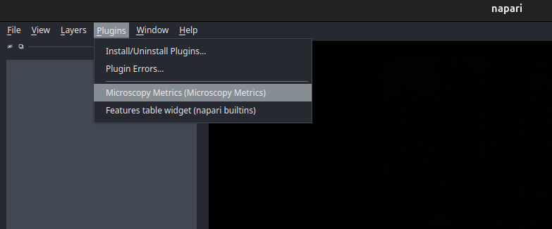

Getting started
Installation
To use napari microscopy metrics, Python 3.12 is required
It is strongly recommended to create a Python virtual environment to avoid conflicts with other packages. You can choose between venv (built-in Python module) or conda (Anaconda/Miniconda).
# Create a virtual environment
python -m venv myenv
# Activate the environment
# On Linux/MacOS:
source myenv/bin/activate
# On Windows:
myenv\Scripts\activate
# Create a conda environment
conda create -n myenv python=3.12
# Activate the environment
conda activate myenv
You can install napari-microscopy-metrics via [pip]:
pip install napari-microscopy-metrics
If napari is not already installed, you can install napari-microscopy-metrics with napari and Qt via:
pip install "napari-microscopy-metrics[all]"
To install latest development version :
pip install git+https://github.com/MontpellierRessourcesImagerie/napari-microscopy-metrics.git
You will also need to install microscopy-metrics and auto-options from MRI github :
pip install --upgrade git+https://github.com/MontpellierRessourcesImagerie/microscopy-metrics.git
pip install --upgrade git+https://github.com/MontpellierRessourcesImagerie/auto-options-python.git
Run
Napari microscopy metrics is a napari plugin, so you first have to run a napari application in your python virtual environment :
napari
You now have access to the napari interface. To open the microscopy-metrics plugin, you just have to enable the option at _Plugins > Microscopy Metrics (Microscopy Metrics)
{kind=link}

A new widget is supposed to be created at the right side of the application. To use the plugin you can follow this tutorial